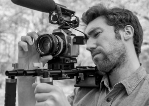

About
Nigel Lyons
Hailing from Ohio, now freelancing in Washington, DC. Shooter and editor of all things documentary, political, art, music and tv. Whether creating a captivating video for a successful Kickstarter campaign or shooting a music video in anamorphic widescreen, Nigel brings his unique ideas, vision and creative energies to every project.